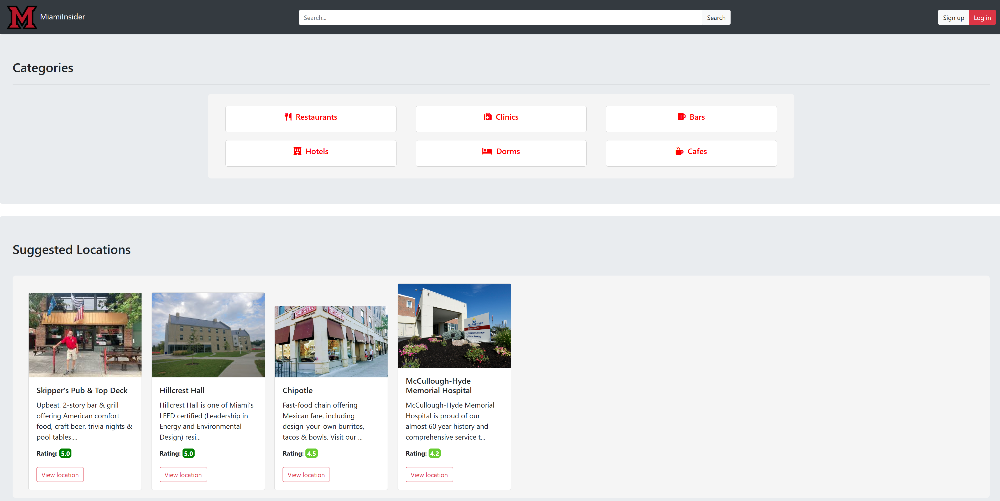

Code Redhawk
Code Redhawk is a full-stack web application enabling instructors to create coding problems and problem sets, and students to submit solutions with immediate feedback.
The platform streamlines administrative tasks and integrates AI for content generation, fostering an engaging learning environment.
I helped set up the backend by establishing a TCP connection to a MySQL database and building an HTTP server using Node.js. I designed the database structure,
and containerized the entire backend (MySQL, Flask, and Node.js) using Docker. This allows the application to run consistently on any device and enables devices on the network to connect to the HTTP server.
This project is intended to run locally or in a controlled environment. A public demo is not currently available but is planned once hosting infrastructure is in place.
Bell Bot
This was one of the games I helped program in Game Design Club. I was the lead on this project, so I was responsible for programming most of the logic
(player movement and death, completing and failing orders, and more), level design, and combining all of the assets together.
I worked with 15 other people, who helped program and design the UI, AI, make music and 3D models, and write the order text.
The game was made in Unreal Engine 5 with Blueprints and is available on Steam for anyone to play for free.

Steam Link: https://store.steampowered.com/app/3520260/Bell_Bot/
Machine Learning
For our final project in Machine Learning, we wrote a paper that analyzed the effectiveness of
a Convolutional Neural Network and K-Fold Cross Validation on a dataset that contained images of
people making ASL symbols with their hands. I helped write the Python code to do this and also
implemented multi-processing in an attempt to speed up the process.
MiamiInsider
A website for Miami University students to leave reviews on businesses. In this site, users can view information about locations in Oxford, Ohio,
such as contact information and description. They can also create an account if they have a Miami University affiliated account and leave reviews
on locations to better guide others. MiamiInsider was made in HTML, CSS, SQLite, and Flask.
I helped design the layout and color scheme of the page, enabled the functionality for the user to make their profile private or public,
and added the pre-existing locations and users with sample reviews to the database.

Link: https://miamiinsider.onrender.com/